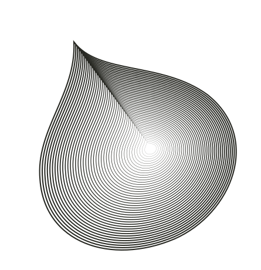

Die Web-
Zwiebel.
Ein Atlas in sieben Schichten. Vom ersten HTTP-Request bis zu dem Klick, der eine Seite verändert.
Atlas öffnen
 Schnittwerk
SchnittwerkEin Atlas in sieben Schichten. Vom ersten HTTP-Request bis zu dem Klick, der eine Seite verändert.
Atlas öffnen